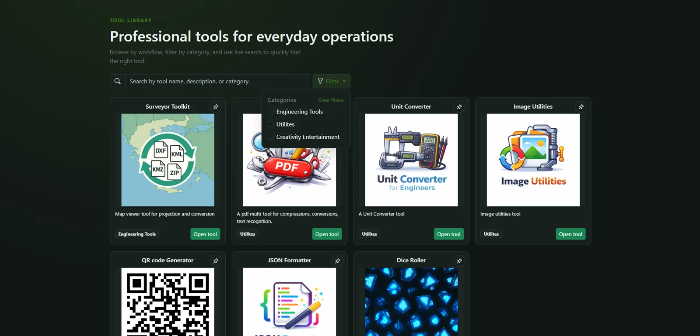
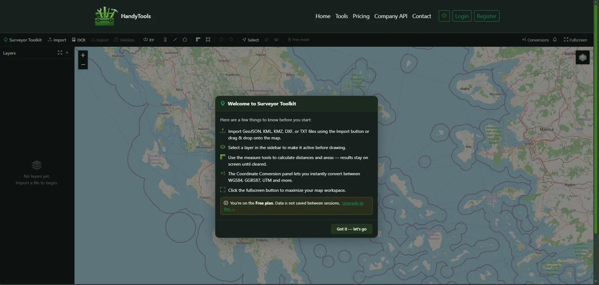
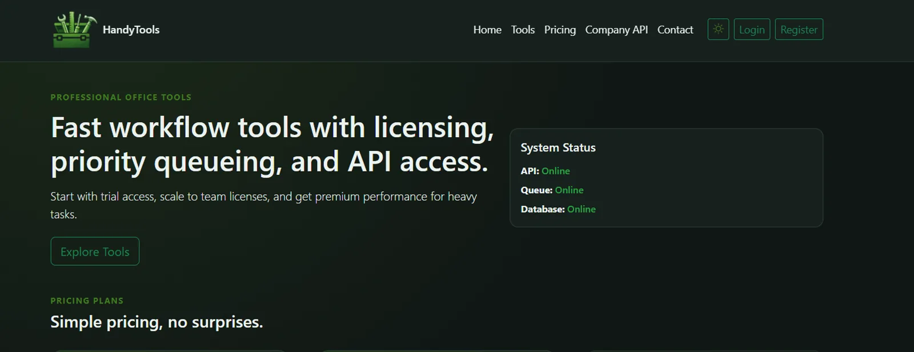

Backend-focused, comfortable across the full stack. I build, ship and run Django
applications end to end: two live production platforms and a solo-built engineering SaaS now in restricted
beta.
A surveying and geoinformatics background means I test coordinate maths to the millimetre
against official values, and design for how field data actually breaks: validation-first, fail loud, never
silently wrong.
teo@dev:~$ try typing
a command or click the chips above...
teo@dev:~$
projects/
Live sites are linked below. Source for my own products is private because they
are commercial, but I can share code access or a walkthrough for technical interviews.



Tool library — category filters and live search across the
modular toolbox
HandyTools
Engineering & utilities SaaS — own product, built solo
in build
PDF, image and OCR tools plus a full-screen Leaflet Surveyor Toolkit for
Greek cadastral work, in English and Greek, with Free/Pro/Enterprise tiers enforced server-side
through DRF permissions.
Background jobs: Celery/Redis pipelines for OCR and PDF conversion with bounded
retries, late acknowledgement, time limits and atomic result writes. Uploads up to 50 MB are staged
on disk and passed to workers by path, keeping them out of Redis messages. Architecture: Framework-free, mypy-checked domain modules behind thin class-based
DRF views. Coordinate conversions route through a single GGRS87 (ΕΓΣΑ87) pivot instead of pairwise
transforms. Per-user quotas hold under concurrency with select_for_update row locks. Quality: ~700 tests in GitHub Actions alongside ruff, mypy and a missing-migration
check, with Docker images pushed to GHCR. Greek coordinate transformations (HEPOS, HATT) are tested to
the millimetre against official values. Status: 230+ commits since July 2025. A restricted beta is open to invited
engineers while the build continues.
Public toolbox — searchable engineering utilities, free to
use
Engineering & Software Services — Agropixida
Engineering practice platform — built and run end to end
live
Full-stack Django platform I built and operate for my own technical-office
practice: dynamic service pages, a project showcase, team profiles, bilingual content
(Greek/English) and a customer management area.
Public toolbox: Generates DXF from coordinate files and converts between
DXF/KML/KMZ/GeoJSON with GGRS87 (ΕΓΣΑ87) ↔ WGS84 reprojection, using ezdxf and pyproj. Highlights: Multilingual CMS, integrated GIS tools, QR code generation, secure
client portals. Status: Live since 2022 and in daily use, with 10+ public engineering utilities.
Public site — bilingual (EL/EN) with staff-managed carousel
and announcements
Iasmos Culture Club Museum
Paid client project — bilingual museum platform
live
Full-stack Django site built for a museum client in place of an off-the-shelf
CMS, so every part of the site (exhibits, events, pages, team, media) is editable by their own
staff through a purpose-built moderator dashboard, with soft delete and superuser-only restore.
Highlights: Full CRUD over exhibits and events (RSVP booking + calendar export);
bilingual EL/EN throughout. Privacy by design: Self-hosted, cookie-free analytics with daily-rotating visitor
hashes; consent-gated YouTube and Maps embeds; moderator Markdown sanitised with nh3; django-axes
login protection. Quality: 355 automated tests; documented backup and restore procedures for the
database and media. Status: Built solo over ~3 months, delivered September 2026. In daily use by the
museum team; I maintain it on an ongoing basis.
Live city map — volunteer actions logged against real
locations
CityCare
Volunteer team coordination & live city map
deploy-ready
Volunteer teams log care, cleaning and watering work against real places on
a live Leaflet map, where pin colour shows how recently each place was looked after. Action types,
teams and volunteer intake are all managed from an admin panel.
Highlights: Configurable bilingual action types, each with its own map page;
volunteer applications with expiring single-use invite links; per-team roles (member, team lead,
moderator) checked through one permissions module; per-team daily statistics; Greek/English UI. Quality: 258 tests in GitHub Actions, run against both SQLite and PostgreSQL. Status: Built and deployment-ready; not yet running with live users.
Software engineer specialising in Python, Django and PostgreSQL. I build full-stack on my own products,
but my strongest focus is the backend: data modelling, REST APIs, background jobs, data processing and
reliability. I own projects from first commit through deployment and ongoing maintenance.
Recent and in-progress work
Building a SaaS platform for surveyors and engineers, with offline field data collection and
server-side sync and conflict resolution.
Developing import pipelines that validate and process records per run from inconsistent real-world
files.
Reducing average query time through Django ORM optimisation and database indexing.
Delivering Stripe billing, automated PDF/DXF generation, and zero-downtime deployments with
off-site backups.
My surveying and geoinformatics background brings domain expertise in GIS, spatial data and engineering
workflows. I value maintainable code, clear architectural decisions and responsibility for what I ship.
Looking for backend-focused Python/Django roles, and open to full-stack Django positions, B2B contracts
and freelance projects.
how-i-work/
Spec first
Larger features start as a design doc and a phased plan with explicit scope decisions, so
trade-offs are made on paper before they're made in code.
AI-assisted, human-reviewed
Design docs and plans drive coding agents (Claude Code) for implementation, tests and security
review. I review every change before it merges.
CI on every push
Django tests, ruff, mypy and a missing-migration check run on GitHub Actions; Docker images are
built and pushed to GHCR.
Layered architecture
Framework-free, type-checked domain modules behind thin class-based views, so the business logic
can be tested without the web layer.
I run what I ship
Docker Compose stacks on Hetzner Cloud: Gunicorn behind a shared Nginx proxy, Let's Encrypt TLS,
loopback-only ports and memory limits.
Written runbooks
Deploy, backup and restore procedures are documented for every production app, so recovery
doesn't depend on memory.
experience/
Software Engineer (Python/Django)
2022 – Present · Remote
Build and maintain Django applications end to end (data model, backend,
interfaces, deployment and ongoing support), both as part of an in-house engineering team and for
clients and my own products. I run production apps as Docker Compose stacks on Hetzner Cloud with
written deploy, backup and restore runbooks. Work includes a bilingual museum platform delivered solo
in ~3 months and an engineering SaaS now in restricted beta.
Surveying, CAD and GIS work in a multidisciplinary engineering team, plus
automation for data processing and validation. I kept running into the same gap: the tooling for
this work was manual, brittle, or didn't exist. That pushed me into software, and the domain
knowledge still drives what I build.
SurveyingCADQGISDXF/KMLCoordinate SystemsQuality Control
Education & certification
B.Sc. Surveying & Geoinformatics Engineering — TEI of Central Macedonia, 2013
Open to backend-focused Python/Django roles and full-stack Django positions, as
employment or contract. Based in Komotini, Greece; available remotely and open to relocation within the
EU/UK.
The fastest way to reach me is email. Need to see private code for a technical
interview? Ask and I'll arrange access.